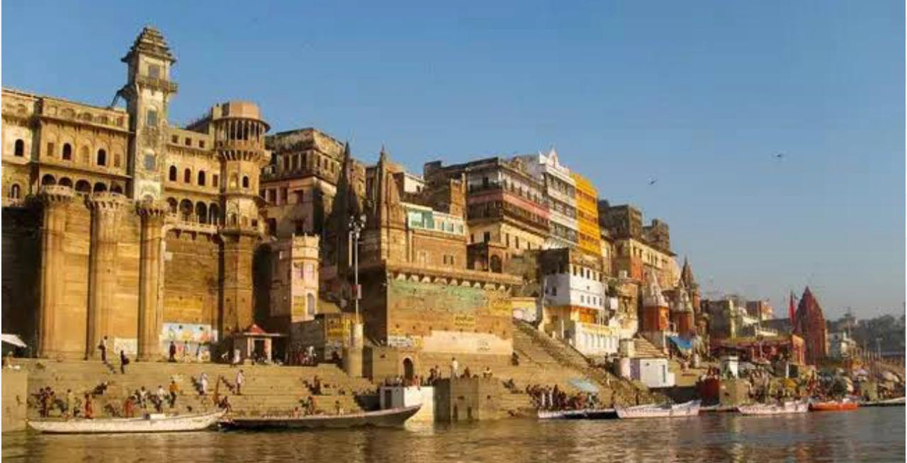
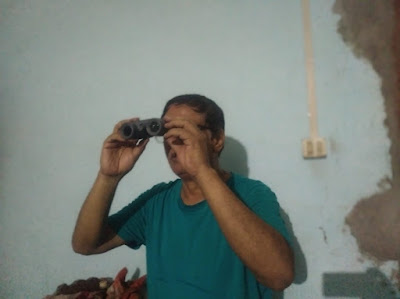
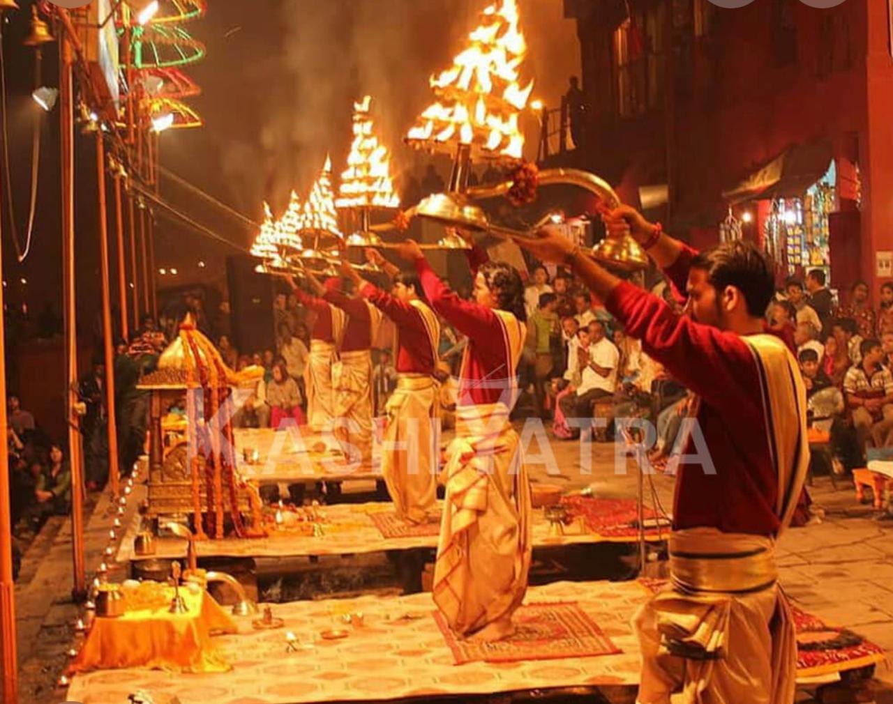
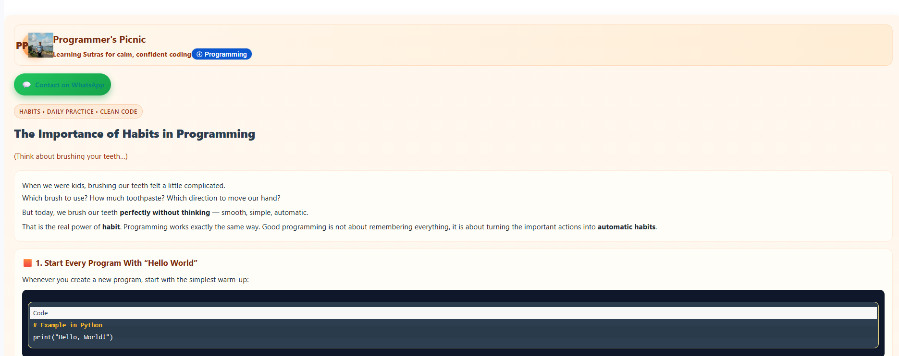

Cinematic Storytelling
Varanasi Based
4K Delivery
Version 3 upgraded with scroll-activated local and YouTube videos, plus photo carousels.
This build adds Intersection Observer playback for local MP4 videos and lazy-loaded YouTube embeds when they enter the viewport, plus silent and soundtrack-enabled photo carousels.
Featured Film
Assi Sunrise Wedding Story
3 camerasMulti-angle coverage
48hTeaser turnaround
Full filmHighlights + shorts
Why this version is sharper
More motion, more proof, better scroll experience
Visitors now meet actual motion early: one featured YouTube-style project, local MP4 reels that autoplay when visible, and carousels that create a premium editorial feeling.
Intersection Observer autoplay
Local MP4 videos begin only when they enter the screen and pause when they leave it.
Mixed media storytelling
YouTube embeds, local reels, silent image slides, and soundtrack-led image slides all work together.
Still conversion-focused
The site still points toward portfolio proof, location confidence, and booking action.
Autoplay Local Videos
Local videos that play when they enter the viewport
These reels use local MP4 files. They are muted by default, loop smoothly, and are controlled with Intersection Observer for a cleaner performance pattern.
Local reel 01
Assi ghat wedding mood reel
Soft emotional pacing for premium wedding storytelling. Plays automatically when visible and pauses when it leaves the viewport.
Local reel 02
Sigra commercial promo reel
Faster commercial energy for brand reels, cafe promos, and high-retention edits.
YouTube reel 01
Featured YouTube video on scroll
This YouTube embed loads only when it enters the screen. It starts muted for autoplay compatibility.
YouTube reel 02
Vertical-style promo block
Use this block for any other YouTube teaser. The iframe is removed when it leaves the viewport to keep the page lighter.
Video Portfolio
Filter projects, then open the video
Portfolio projects load from data.json. Local videos can live beside YouTube videos in the same content model.
Loading portfolio...
Photo Carousels
Use silent and soundtrack-led slideshows for mood building
One carousel runs without sound. Another has an optional local soundtrack file that the visitor can toggle on or off.
Silent carousel
Editorial stills without audio


Sound carousel
Photo sequence with local ambient sound



Package Guide
Clear packages reduce hesitation
Clients usually want to know: how much, how long, how many cameras, and what they receive.
Varanasi Shoot Map
Explore local shoot spots and route confidence
Show clients that you understand locations, mood, and practical movement across the city.
Select a location
Click a marker or choose a place from the list to see mood, best use, and location notes.
Booking Enquiry
Send your project brief
This demo stores enquiries in the browser and gives you a WhatsApp shortcut. Replace with your backend later.
Short-form proof keeps the site active
This section is still fed from the same data file, so your video and social proof stay easy to update.